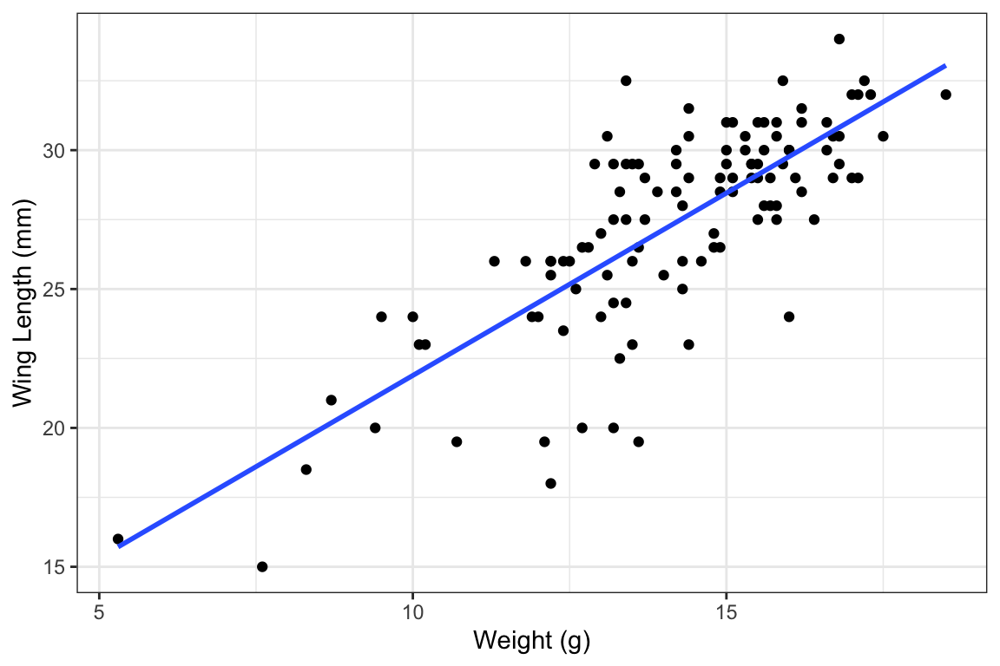
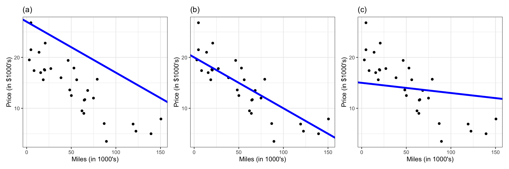
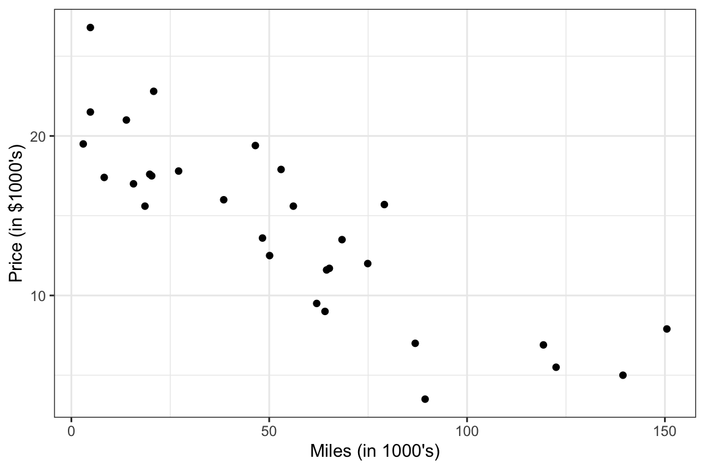

Activity: Fitting linear regression models
Instructions:
Recap: regression
Regression models the relationship between predictor \(x\) and response \(y\). A general regression model looks like
\[ y = f(x) + \varepsilon, \]
where
- \(f\) is a function that describes systematic information that \(x\) provides about \(y\)
- \(\varepsilon\) describes random noise (natural variability from individual to individual)
The function \(f\) which describes this relationship can be as rigid or as flexible as we like. A common choice for \(f\) is a linear function, and the linear regression model is
\[ y = \beta_0 + \beta_1 x + \varepsilon \]
Example: Sparrows
Last class, we saw an example of linear regression with data on 116 sparrows from Kent Island. The plot below shows the relationship between the wing length and weight for these sparrows, with a best-fit line in blue:
Because the relationship appears linear, it is reasonable for us to use linear regression to model this relationship.
Population model: \(\text{WingLength} = \beta_0 + \beta_1 \text{Weight} + \varepsilon\)
Fitted model: \(\widehat{\text{WingLength}} = 8.76 + 1.31 \ \text{Weight}\)
Example: Honda Accords
The plot below shows the relationship between price and mileage for a sample of used Honda Accords

Estimating coefficients
The equation of the fitted linear regression line for the Honda Accord data is
\[\widehat{\text{price}} = 20.81 - 0.12 \ \text{mileage}\]
That is, our estimated coefficients are \(\widehat{\beta}_0 = 20.81\) and \(\widehat{\beta}_1 = -0.12\). How did we get these estimates?
To think about how to choose the estimate coefficients \(\widehat{\beta}\), consider three different fitted lines to the Honda Accords dataset:

Residuals
Intuitively, want the line to “go through” the points. To formalize this, we define residuals.
Definition (residuals): Let \(y_i\) be the observed response from one row in the dataset, and let \(\widehat{y}_i\) be the predicted response from a fitted model. The residual is the difference between the observed and predicted values:
\[\text{residual}_i = y_i - \widehat{y}_i\]
Sum of squared residuals and least squares estimation
The closer our residuals are to 0, the better we are doing at predicting the observed responses! So, we want our fitted line to make the residuals close to 0. To aggregate information across all the observations in the data, we define the sum of squared residuals.
Definition (sum of squared residuals): Suppose we have \(n\) observations in our data, and let \(y_1,...,y_n\) be the observed values of the response variable. Let \(\widehat{y}_1,...,\widehat{y}_n\) be the predicted values from our fitted model. The sum of squared residuals, also called the residual sum of squares or sum of squared errors, and denoted by SSE, is:
\[SSE = \sum_{i=1}^n (y_i - \widehat{y}_i)^2\]
The plot below visualizes the squared residuals (as red boxes) and reports the SSE for three different lines with the Accord dataset:

Intuitively, the middle line is the better fit because it goes through the “middle” of the points. Mathematically, this corresponds to having a lower SSE, because the residuals tend to be closer to 0.
Definition (least squares linear regression): For a linear regression model with one explanatory variable \(x\), \(\widehat{y}_i = \widehat{\beta}_0 + \widehat{\beta}_1 x_i\). Our estimated intercept and slope \(\widehat{\beta}_0\) and \(\widehat{\beta}_1\) are the values which make the SSE as small as possible, where
\[SSE = \sum_{i=1}^n (y_i - \widehat{y}_i)^2 = \sum_{i=1}^n (y_i - \widehat{\beta}_0 - \widehat{\beta}_1 x_i)^2\]
Fitting the model in R
In R, we can fit a linear regression model using the lm function. Here is code that will fit the model for the Accord dataset. (The code loads the AccordPrice dataset first, which comes from the Stat2Data package, and then fits the model).
library(Stat2Data)
data("AccordPrice")
lm(Price ~ Mileage, data = AccordPrice)
Call:
lm(formula = Price ~ Mileage, data = AccordPrice)
Coefficients:
(Intercept) Mileage
20.8096 -0.1198 As you can see, we get \(\widehat{\beta}_0 = 20.81\) and \(\widehat{\beta}_1 = -0.12\) (the values reported above).
A note on the code:
lmis used to fit linear models (“lm” stands for “linear model”)- The first argument to the
lmfunction is a formula specifying the variables in our model.Price ~ Mileagemeans that Price is the response, and Mileage is the explanatory variable. We have to separate the response and explanatory variables with a tilde~ data = AccordPricespecifies that thePriceandMileagevariables come from theAccordPricedataset. If using a different dataset, you will need to change thedata
Housing prices
For the remainder of this activity, we will work with a dataset on 929 houses sold between 2005 and 2015 in Grinnell, Iowa. The SquareFeet column records the square footage of each home’s living space, while the SalePrice column records the sale price of the house (in US dollars).
First, make sure you have the Stat2Data package installed. If not, run install.packages("Stat2Data") in your console (not in a qmd file).
Then, answer the following questions.
Questions
Let’s begin by exploring the data and considering different regression lines. The code below plots the price and area of the Grinnell houses, and adds a line with an intercept of 85 and a slope of 100. It also reports the SSE for that line.
library(Stat2Data)
data("GrinnellHouses")
# change values here!
est_intercept = 85
est_slope = 100
# plot
GrinnellHouses |>
ggplot(aes(x = SquareFeet, y = SalePrice)) +
geom_point() +
geom_abline(intercept = est_intercept,
slope = est_slope,
color = "blue",
lwd = 1.5)
# calculate sum of squared residuals
GrinnellHouses |>
mutate(prediction = est_intercept + est_slope*SquareFeet,
residual = SalePrice - prediction) |>
summarize(sum_sq_resid = sum(residual^2, na.rm=T)) sum_sq_resid
1 3.963218e+12Now, checking SSE values by guess-and-check is tedious! Instead, let’s fit the model in R. We will use the lm function to fit a model with square footage as the explanatory variable, and sale price as the response.